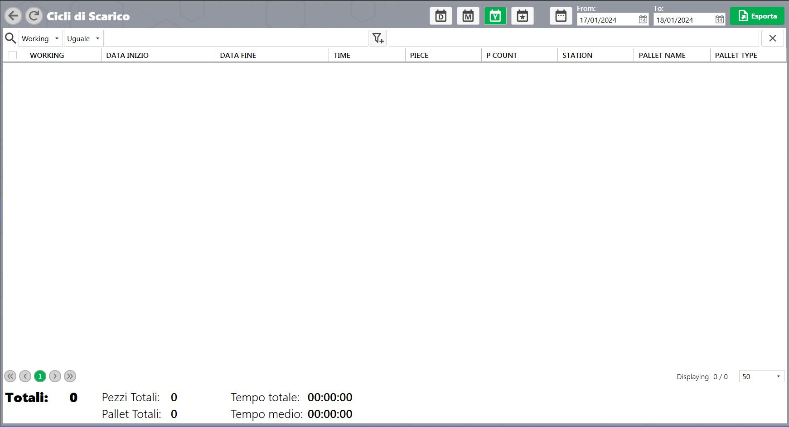

Machine technical documentation Operational document
Mostra le statistiche di ogni ciclo di scarico, cioè per ogni presa e deposito di un pezzo.

Parametri
Working | lavorazione alla quale apparteneva il pezzo. |
Data di inizio | data di inizio pallettizzazione del pezzo. |
Data fine | data di fine pallettizzazione del pezzo. |
Time | tempo impiegato per concludere il ciclo di scarico del pezzo. |
Piece | nome pezzo depositato. |
P count | numero pezzo depositato. |
Station | numero stazione di deposito pezzo. |
Pallet name | Npal/nome del contenitore di deposito del pezzo. |
Pallet type | PalType del contenitore di deposito del pezzo. |
Esporta la lista di tutti I cicli di scarico eseguiti come file. |